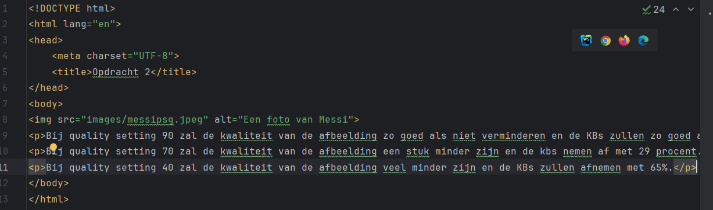

Bij quality setting 90 zal de kwaliteit van de afbeelding zo goed als niet verminderen en de KBs zullen zo goed als niet verminderen.
Bij quality setting 70 zal de kwaliteit van de afbeelding een stuk minder zijn en de kbs nemen af met 29 procent.
Bij quality setting 40 zal de kwaliteit van de afbeelding veel minder zijn en de KBs zullen afnemen met 65%.
De kwaliteit ligt hoger bij quality setting 70 in vergelijking met quality setting 40 en de afname van KBs is een stuk hoger bij quality setting 40 met 60% terwijl quality setting 70 minder KBs verliest met 38%.
Bij quality setting 40 kan je de pixels bijna tellen in tegenstelling tot quality setting 70.